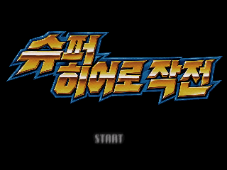
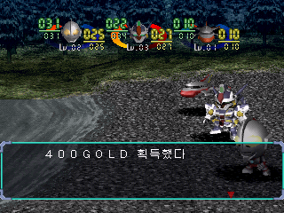
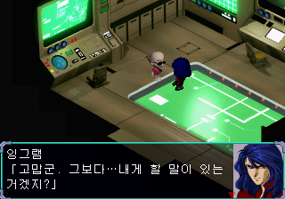
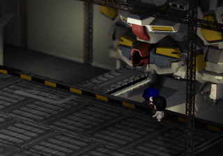
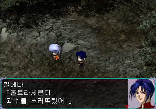

쿠스하 루트
본편의 필수 진행과 최종전, 엔딩·크레딧까지 실제 플레이했습니다.
그 시절의 영웅들.
이번엔 우리말로 만날 시간.
대사와 메뉴, 이름 표시와 엔딩 문구까지.
0.8v 미완성 배포판으로 다시 시작하세요.
아직 검수 중입니다. 발견한 오류는 로그인 없이 제보해 주세요.





준비물은 일본판 원본 BIN 트랙 4개.
기존 한글판이나 CHD에 직접 적용하지 않습니다.
0.8v 패치 ZIP을 내려받고
압축을 모두 풀어 주세요.
압축을 푼 폴더의Apply-Patch.cmd를 실행합니다.
일본판 원본 BIN 트랙 4개가
들어 있는 폴더를 선택합니다.
생성된 Korean 0.8v 폴더의
CUE 파일을 에뮬레이터에서 엽니다.
적용 도구가 원본과 결과를 자동으로 확인합니다.
원본 파일은 변경하지 않습니다.
남녀 본편 검수와 수정별 재검증을 거쳤습니다. 미검수 장면과 관계 분기가 남아 있으며, 모든 화면을 0.8v로 다시 플레이한 것은 아닙니다.
남녀 각각 한 관계 루트를 엔딩까지 진행했습니다.
본편의 필수 진행과 최종전, 엔딩·크레딧까지 실제 플레이했습니다.
본편의 필수 진행과 최종전, 엔딩·크레딧, 타이틀 복귀까지 실제 플레이했습니다.
오탈자, 어색한 문장, 진행 오류.
발견한 장면을 편하게 남겨주세요.
닉네임과 발견한 장면을 남겨 주세요.
기존 제보를 확인하고 로그인 없이 댓글을 작성할 수 있습니다.
제보 게시판은 별도 창에서 열립니다.
ZIP에는 한글 패치와 적용 도구·설명서만 들어 있습니다. 일본판 원본 게임 데이터는 직접 준비해 주세요.
일본판 슈퍼 히어로 작전(SLPS-01776)의 BIN 트랙 4개로 나뉜 원본을 사용합니다. 이름이 달라도 크기와 SHA256이 맞으면 적용 도구가 찾습니다. 다른 원본이면 적용 전에 중단합니다.
이 패치는 원본 Track 1 BIN에 적용하는 방식입니다. 원본 BIN 트랙 4개를 준비해 주세요. 패치된 BIN/CUE는 CHD로 변환할 수 있습니다. 자세한 방법은 적용 안내에 있습니다.
게임을 완전히 종료했다가 다시 켜고 게임 내 메모리카드 세이브를 불러와 주세요. 기존 강제 저장·즉시 저장에는 수정 전 데이터가 남을 수 있습니다.
적용 도구가 원본과 결과를 자동으로 확인합니다. 직접 비교할 수 있는 SHA256 값입니다.
c285ca63c85dc599225c16d5f21d9d70111107ef83204623d40d681239845f938166ea83da201ceed3fd49bce61774bad4f87ef3b665dc2a26adc51218f94920533c2e946c08874253cd85e5e9e1cd75cbbb004a98242b2a6ef590a207644eef